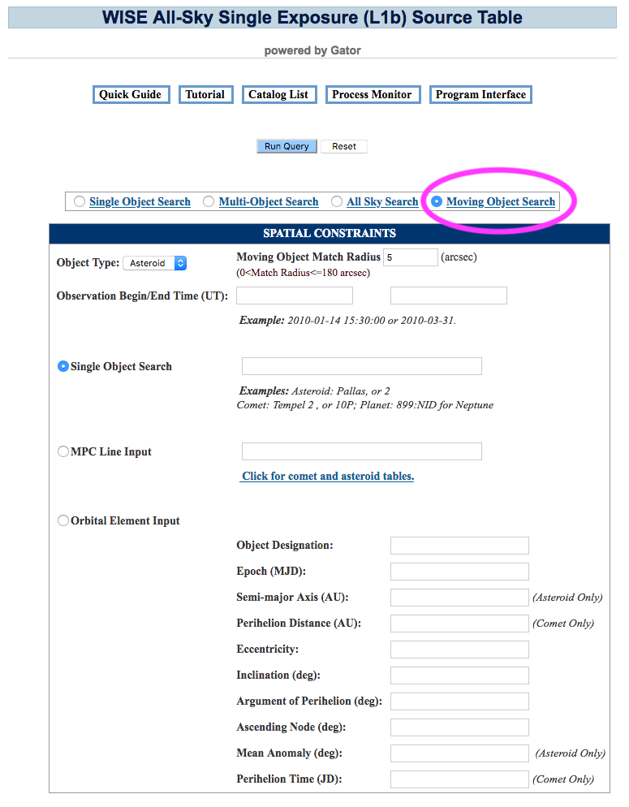

Contents of page/chapter:
+Overview
+Object Name
+MPC Input
+Orbit Element Input
+Observation Time

The object's ephemeris is used to calculate predicted positions within the time range of the catalog of interest, and then a position cone search match against the catalog is done. Additional constraints may be supplied by the user, e.g. adjusting the search radius in the Moving Object Match Radius box.
There are three Solar System object/orbit search types:
Using the object name or numeric designation is preferred, as the osculating orbital elements nearest in time to the observations will be used.
Search by object name by entering the name or numeric designation in the "Single Object Search" field. For asteroids, one can enter either the ID number, name, or designation; e.g. 1917, Cuyo, or 1968 AA. It can handle names with apostrophes and dashes like O'Connell and Pic-du-Midi. For comets one can enter the numeric ID, e.g. 10P for 10P/Tempel 2, or a designation, e.g. 2009 WJ50 for 233P/La Sagra. Planetary satellites (and planets, where possible) can be input by name, e.g. Titan.
There can be name ambiguities. For example, entering "WISE" is a
problem as there were many asteroids and comets discovered by the WISE
mission. Entering "Neptune" is unclear as there are ephemeris files
for both Neptune and the Neptune system barycenter. The tool will
deliver a messsage if there is an ambiguity, either via the web page,
or via a link to a log file for a non-interactive session. The
message will contain suggested NAIF  ID's,
and you can use them as follows, e.g. "1003094:NID" for comet
317P/WISE or "899:NID" for Neptune. In a few cases, there are
satellites and asteroids with the same name, and you may distinguish
them by, e.g. "Europa:SAT" and "Europa:AST".
ID's,
and you can use them as follows, e.g. "1003094:NID" for comet
317P/WISE or "899:NID" for Neptune. In a few cases, there are
satellites and asteroids with the same name, and you may distinguish
them by, e.g. "Europa:SAT" and "Europa:AST".
One can also search using a Minor Planet Center input string. The
format is given here for minor planets  and comets
and comets  .
.
If the data were taken at the same epoch as the epoch of the MPC
orbital elements, one could cut-and-paste a line directly from a
table, e.g. the MPC Orbit (MPCORB) Database  .
.
ASTEROID: Icarus
| Designation | H | G | Epoch | M | w | Node | i | e | n | a |
| 01566 | 16.9 | 0.15 | K1128 | 78.13687 | 31.35339 | 88.02734 | 22.82772 | 0.8268277 | 0.88069351 | 1.0779191 |
COMET: C/2010 A4 (Siding Spring)
| Name/Design | Tp | q | e | w | Node | i | Epoch | H | G | Name |
| CK10A040 | 2010 10 8.7896 | 2.738033 | 0.990439 | 271.6989 |
346.6856 | 96.7301 | 20110208 | 12.5 | 4.0 | C/2010 A4 (Siding Spring) |
The user can alternately input the standard six orbital elements for an object. Best results will be obtained if these are the osculating elements at the same epoch as the observations. For an asteroid these are
For comets, the elements are
Notice that for comets, perihelion distance is used instead of semimajor axis and time of perihelion passage is used instead of mean anomaly. The reason for replacing these two parameters is to allow for cases where long period comets have a parabolic or hyperbolic orbit.
A good description of the orbital parameters is given in JPL's Solar System
Dynamics web site  .
.
The user has the option to fill in specific observation begin and end times in UT, or leave them blank. In the latter case, the whole observation range of the catalog is used.
The rest of the options are the same as a non-moving (inertial, not in the Solar System) object search.